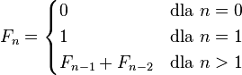

Ciąg Fibonacciego
W poprzednich lekcjach pokazaliśmy zalety rekurencji. Jednak rekurencji należy używać z rozwagą.
W tej lekcji pokażemy złe użycie rekurencji. Zaczniemy od ciągu Fibonacciego.
Ciąg Fibonacciego jest definiowany następująco: pierwszy wyraz jest równy zero,
drugi jest równy jeden, a każdy następny jest sumą dwóch poprzednich. Formalnie:

Na podstawie tego wzoru łatwo napisać funkcję rekurencyjną, która oblicza wyrazy tego ciągu.
W oknie z edytorem kodu pojawił się taki program. Uruchom go dla małych liczb (np. 3, 5 oraz 7)
i krok po kroku (za pomocą klawisza F7) przeanalizuj działanie programu.
Następnie uruchom program dla większej liczby (np. 30) i naciśnij przycisk
„szybkie wykonanie programu” (skrót Alt+F5). Kiedy to zrobisz przejdź do kolejnej części lekcji.